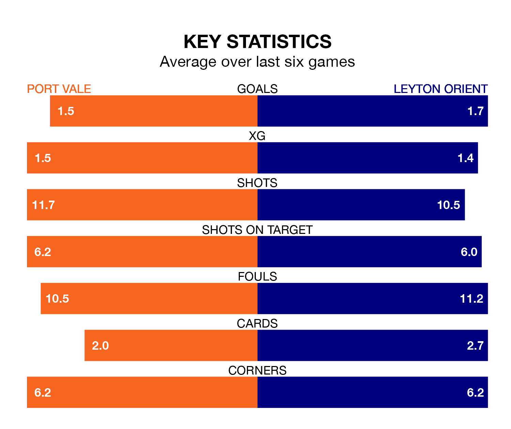

Leyton Orient face Port Vale on Tuesday seeking to protect their long unbeaten run in EFL League One.
Orient are unbeaten in seven, with five wins and two draws, ahead of the 7.45pm kick-off.
They face a Vale team who have won one and drawn two over the same number of games.
In the last 10 years, Vale and Orient have played each other on nine occasions. They won three each, and they drew three times.
On average, the Valiants scored 1.6 goals and Orient 1.6 in those matches.
Their last meeting was on January 22 2022, when they played out a 0-0 draw.
Vale are 21st in the table after 27 games, of which they have won eight and drawn six, earning 30 points.
Orient are 11 places ahead of the Valiants in 10th, with 11 wins and nine draws putting them on 42 points.
With 28 goals in 27 games so far this season, the hosts are scoring at below the league average rate with 1.0 goals per game. And they are conceding more than average, letting in 42 goals at a rate of 1.6 per game.
The away team are also below average scorers, with 1.1 goals per game, compared to a league average of 1.3. They have conceded 1.2 goals per game.
Vale's Ethan Chislett is among the league's most creative players, racking up seven assists in 24 appearances so far this season, and holding fourth spot in EFL League One's assist charts.
For Orient, Theodore Archibald has set up the most goals, having laid on five assists in 28 games.
Vale's last match was on Saturday, a 3-0 loss against Fleetwood Town.
Orient beat Carlisle United 3-2 last time out, also on Saturday, with Shaqai Forde (two) and Ruel Sotiriou on the scoresheet.
Tuesday's match will be refereed by Scott Jackson, who has taken charge of four EFL League One games so far this season, issuing no red cards and booking 16 players. He has not awarded any penalties.
The last Vale game Jackson refereed was a 0-0 away draw with Stevenage on October 21. He is yet to oversee a match featuring Orient this season.
Updated: 13:52 (UTC), 05/02/24